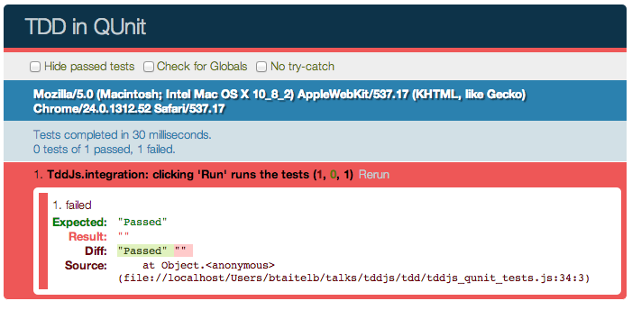
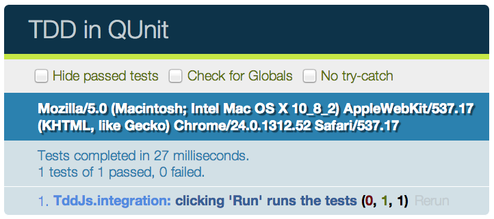
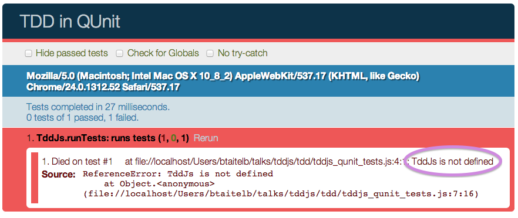
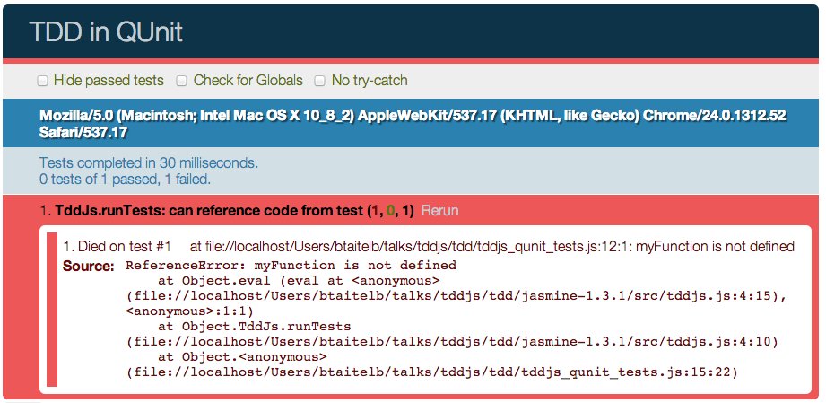
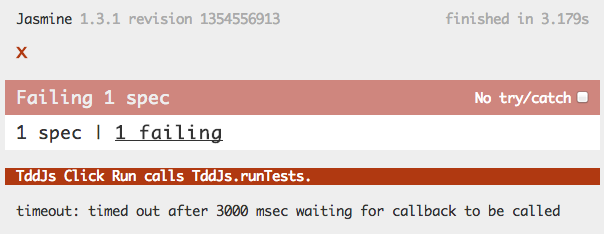
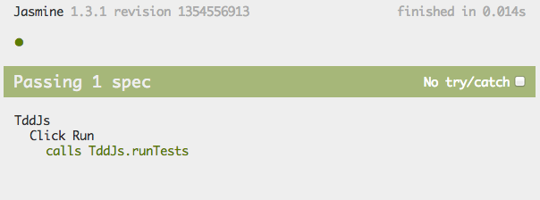

TDD ∩ JS
Ben Taitelbaum, Coshx Labs
CV.js -- January 23, 2013
Overview
- Fluff
- Examples
Why TDD?
- Great topic for discussion (beCraft?)
- Tools in a toolbox
- Show, Don't Tell
BDD
- Behavior Driven Development
- Focus on Outcomes
Example: TDD Tool for JavaScript
- Think jsfiddle.net or jsbin.com
Wireframe

BDD
User Story (Value Proposition)
As a developer
I want to interactively test my javascript
So I can have confidence in its correctnessAcceptance Test
Given a javascript function and a test for that function
When I type the javascript function into the code panel
And I type the test into the test panel
And I click "Run"
Then I should see "Test Passed" in the result areaBDD First Attempt
<button id="run">Run ▶</button>
<textarea id="test"
placeholder="Enter Test Here" rows="10">
</textarea>
<textarea id="code"
placeholder="Enter Code Here" rows="10">
</textarea>
<div id="result">Results</div>
<script>
$("#run").on("click", function() {
$("#result").text("Test Passed!");
});
</script>BDD First Example
Results
BDD First Example
- Wait, was that a test?
- Where do we go next?
BDD w/ QUnit - Setup
<!DOCTYPE html>
<html>
<head>
<meta charset="utf-8">
<title>TDD in QUnit</title>
<link rel="stylesheet"
href="http://code.jquery.com/qunit/qunit-1.10.0.css">
<script src="http://code.jquery.com/jquery-1.9.0.js"></script>
</head>
<body>
<div id="qunit"></div>
<div id="qunit-fixture"></div>
<script src="http://code.jquery.com/qunit/qunit-1.10.0.js"></script>
<script src="tddjs_qunit_tests.js"></script>
</body>
</html>BDD w/ QUnit - Integration Test
module("TddJs.integration");
test("clicking 'Run' runs the tests", function() {
var test = 'equal(myFunction(), 42);';
var code = 'myFunction = function() { return 42; };';
$("#test").val(test);
$("#code").val(code);
$("#run").click();
equal($("#result").text(), 'Passed');
});BDD w/ QUnit - Integration Test Result

BDD w/ QUnit - STTCPW
module("TddJs.integration", {
setup: function() {
var $fixture = $("#qunit-fixture");
$fixture.append('<div id="result">Passed</div>');
}
});
test("clicking 'Run' runs the tests", function() {
var test = 'equal(myFunction(), 42);';
var code = 'myFunction = function() { return 42; };';
$("#test").val(test);
$("#code").val(code);
$("#run").click();
equal($("#result").text(), 'Passed');
});BDD w/ QUnit - Integration Test Result

BDD w/ QUnit - Make It Fail!
test("clicking 'Run' runs the tests", function() {
equal($("#result").text(), '', "no results initially");
var test = 'equal(myFunction(), 42);';
var code = 'myFunction = function() { return 42; };';
$("#test").val(test);
$("#code").val(code);
$("#run").click();
equal($("#result").text(), 'Passed');
});BDD w/ QUnit - Make It Pass
module("TddJs.integration", {
setup: function() {
var $fixture = $("#qunit-fixture");
$fixture.append('<button id="run">Run</button>');
$("#run").on("click", function() {
$fixture.append('<div id="result">Passed</div>');
});
}
});
test("clicking 'Run' runs the tests", function() {
equal($("#result").text(), '', "no results initially");
var test = 'equal(myFunction(), 42);';
var code = 'myFunction = function() { return 42; };';
$("#test").val(test);
$("#code").val(code);
$("#run").click();
equal($("#result").text(), 'Passed');
});BDD w/ QUnit - Discussion
- What next?
- How do we make this less ugly?
TDD
- Test Driven Development
- Let Failing Tests Guide Us
QUnit TDD - Setup
<!DOCTYPE html>
<html>
<head>
<meta charset="utf-8">
<title>TDD in QUnit</title>
<link rel="stylesheet"
href="http://code.jquery.com/qunit/qunit-1.10.0.css">
<script src="http://code.jquery.com/jquery-1.9.0.js"></script>
</head>
<body>
<div id="qunit"></div>
<div id="qunit-fixture"></div>
<script src="http://code.jquery.com/qunit/qunit-1.10.0.js"></script>
<script src="tddjs_qunit_tests.js"></script>
</body>
</html>QUnit Unit Test
module("TddJs.runTests");
test("runs tests", function() {
var test = '5;';
var code = '';
var actual = TddJs.runTests(test, code);
var expected = 5;
var optionalMsg = "expected output to be 5";
equal(actual, expected, optionalMsg);
});QUnit Unit Test Result

Make It Pass - Create a Library
Add Library to HTML:
<script src="src/tddjs.js"></script>Start Simple:
var TddJs = {};
TddJs.runTests = function(tests, code) {
return eval(tests);
}Make a Failing Test
module("TddJs.runTests");
test("can reference code from test", function() {
var test = 'myFunction();';
var code = 'myFunction = function() { return 42; }';
var actual = TddJs.runTests(test, code);
var expected = 42;
equal(actual, expected);
});QUnit Unit Test Result

Make It Pass
var TddJs = {};
TddJs.runTests = function(tests, code) {
eval(code);
return eval(tests);
}What's Missing?
asyncTest("executed when run clicked", function() {
expect(1);
var mockRunTests = function() {
ok(true);
start();
};
TddJs.runTests = mockRunTests;
$("#run").click();
});Jasmine TDD - Setup
- https://github.com/pivotal/jasmine/downloads
- Edit SpecRunner.html
Jasmine TDD (Async)
describe("TddJs", function() {
describe("Click Run", function() {
it("calls TddJs.runTests", function() {
var runTestsCalled;
runs(function() {
runTestsCalled = false;
var mockRunTests = function() {
runTestsCalled = true;
};
TddJs.runTests = mockRunTests;
$("#run").click();
});
waitsFor(function() {
return runTestsCalled;
}, "mockRunTests never called", 5000);
runs(function() {
expect(runTestsCalled).toBeTruthy();
});
});
});
});Jasmine TDD w/ Sinon
describe("TddJs", function() {
describe("Click Run", function() {
it("calls TddJs.runTests", function() {
var callback;
runs(function() {
callback = sinon.spy();
TddJs.runTests = callback;
$("#run").click();
});
waitsFor(function() {
return callback.called;
}, "callback to be called", 3000);
runs(function() {
expect(callback.called).toBeTruthy();
});
});
});
});Jasmine Failing

Jasmine Passing

Digging Deeper
- Who's responsible for sending args to
runTests? - Who should be responsible?
- Where do we test?
Digging Deeper Option #1
it("calls runTests with correct args", function() {
var tests, callback;
tests = "5;";
$("#tests").val(tests);
callback = sinon.spy();
TddJs.runTests = callback;
$("#run").click();
expect(callback.getCall(0).args[0]).toEqual(tests);
});Digging Deeper Option #2
it("runs tests from the model", function() {
var tddjs = new TddJs();
tddjs.tests = "5;";
tddjs.code = "";
expect(tddjs.runTests()).toEqual(5);
});
it("sets model properties from the form", function() {
var tests = "42;";
$("#tests").val(tests);
expect(TddJs.get('tests')).toEqual(tests);
});Refactoring
it("runs the specified tests", function() {
var resultHandler;
TddJs.tests = "42;";
TddJs.code = "";
resultHandler = function(result) {
expect(result).toEqual(42);
};
TddJs.runTests(resultHandler);
});
describe("default result handler", function() {
it("updates the results on the page", function() {
TddJs.defautResultsHandler("hello");
expect($("#result")).toEqual("hello");
});
});Questions, Comments, Concerns?
Thanks!
- Comment/Rate: http://spkr8.com/t/19461